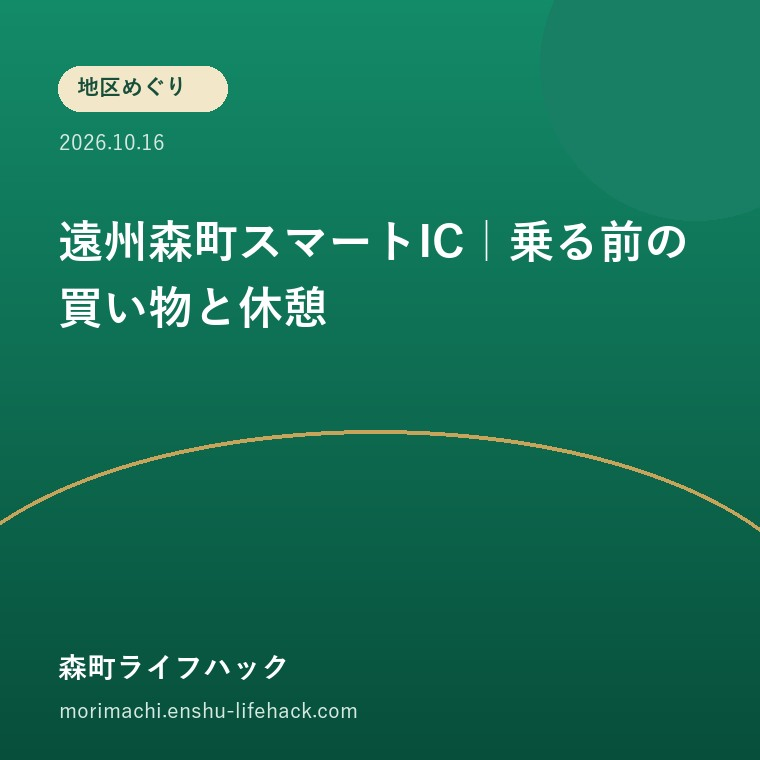

地区めぐり
遠州森町スマートIC｜乗る前の買い物と休憩

Q. 遠州森町スマートICから入って、そのPAで休憩できる？
A. 森町公式案内では、遠州森町スマートICから流入後は遠州森町PAの施設を利用できません。休憩や買い物は高速へ入る前に済ませるか、他のSA・PAを利用する段取りにします。ETC専用で、カードを車載器へ挿入し、ゲート前で一旦停止してから通行します。
実家の用事を終えてから、どこで一息つくか
森町へ帰省する家族の移動は、地域の道と、日々そこで店や施設を支える人の仕事の上に成り立っています。実家の管理を頼まれて訪れる場合も同じです。用事を詰めて、最後の休憩を高速の入口任せにするより、町内で立ち寄る順番を考えておくと、帰り道に余裕を残せます。
「スマートICはPAにあるから、入ったところで休もう」と考えると、遠州森町では予定が合わなくなります。森町公式の利用上の注意には、流入後の施設利用に制限があります。これは新しい開通の話ではなく、帰路を組み立てるときに見落としたくない既存の条件です。
この記事は2026年10月16日に確認した公式案内をもとに、スマートICから高速道路へ乗る場合に絞って整理します。降りるときの施設利用条件は、今回の本文だけで補って説明しません。PAに一般道から入る別の方法や、店舗の営業時間も、本記事では確認していません。
今日の小さな一歩は、帰りに高速へ入る前に済ませる休憩と買い物を一つずつ決めることです。店の名前をすぐ決める必要はありません。本人や家族が何を済ませたいかを書き、町内で立ち寄るか、他のSA・PAへ移ってからにするかを分けるだけでも、予定の取り違えを減らせます。
森町公式が案内する、流入後のPA利用制限
森町「新東名 遠州森町スマートIC」は、スマートICから流入した後は遠州森町パーキングエリアの施設を利用できないと明記しています。他のサービスエリア・パーキングエリアを利用するよう案内しています。スマートICを通った直後のPAで買い物や休憩を済ませる計画には、この条件を先に反映させます。
意外な点は、PAの名前とICの名前が同じでも、入口を通ればその施設を使えるとは限らないことです。私は、地図上で隣にあることと、車で利用できる動線を分けて考えたいです。近さだけを見て休憩予定を置くと、家族が予定していた一息を先送りすることになります。
町の公式ページの更新日は2019年3月1日です。開通日時は2014年3月29日15時と記載されています。2026年秋の新設や、利用条件の新たな変更を知らせる記事ではありません。昔からある入口でも、初めて使う人や久しぶりに通る家族には、確認しておく意味のある条件です。
流出時の利用条件は、流入後の制限と同じだと推測しないようにします。高速道路から降りる場合と、町内から高速道路へ乗る場合は動線が違います。今回確認した文だけで「どちらの場合も同じ」と説明することはできません。利用の方向が変わるなら、その条件を別途調べる必要があります。

上りは草ケ谷、下りは一宮という入口の違い
森町公式の概要は、遠州森町スマートICの設置場所を、上り線は森町草ケ谷、下り線は森町一宮としています。利用時間は24時間で、東京方面、名古屋方面の全方向へ出入りできると案内しています。目的の方面に対応する入口を、町内での立ち寄り先と合わせて確認します。
家族が別々の車で帰る場合も、集合先を「森町のスマートIC」とだけ伝えない方が混乱を減らせます。上りと下り、向かう方面、最後の立ち寄り場所を一緒に確認します。これは家族側の連絡の工夫です。実際の標識と道路の案内に従い、出入口の構造をこの記事の概念図だけで判断しないでください。
全方向に使えるという利点と、流入後にPA施設を使えない条件は両立します。「便利なIC」という一言だけでは、買い物と休憩の予定は決まりません。入口の場所、向かう方向、施設へ立ち寄る順番を、それぞれ別の欄に書いておくと、家族の説明が具体的になります。
ICに近い土地の暮らし方は、遠州森町スマートICへの近さと暮らしやすさの記事で扱っています。今回の記事は住みやすさの評価を広げず、帰路の立ち寄り順に焦点を当てます。近くに入口があることを、すべての用事をそこで済ませられることと混同しないためです。
ETC専用と一旦停止を、出発前に共有する
遠州森町スマートICはETC専用です。森町公式はETCカードを車載器へ挿入することと、ゲートの前で必ず一旦停止することを案内しています。車が停止した状態でなければ開閉バーが開かず、バーが開いてから通行する説明です。通常のETC入口と同じ感覚で、止まらず進む計画にしません。
私からの提案は、運転を交代する前に、利用する入口がスマートICであることを伝えることです。運転者が変わると、行き先を知っていても入口の条件を知らない場合があります。カードの準備を含め、車を動かす前に確認できる項目を先に済ませると、ゲート付近で慌てる要因を減らせます。
公式ページには対象車種に関する記載もありますが、概要と本文で車長の境界表現に差があります。本記事では境界寸法をもとに利用可能車両を判定しません。通常と異なる車両で利用する場合は、道路会社等の最新案内で対象条件を確認してください。これは施設利用の話とは別の確認事項です。
ゲートの条件を理解していても、当日の道路状況まで確定するわけではありません。出発前には高速道路の最新情報と、入口へ向かう一般道の状況を分けて確認します。町の「防災情報」は県の道路情報への入口を案内していますが、県システムは森町管理の道や高速道路のすべてを扱うものではありません。
休憩と買い物を、町内で先に置く方法
スマートICへ向かう前の段取りは、実家の用事、町内での休憩、必要な買い物、高速道路への流入という順序で考えられます。これは私が提案する一例で、特定店舗の利用を勧めるものではありません。立ち寄る施設の営業時間や駐車場は、出発する日に別途確認する必要があります。
先に決めるのは、欲しい物の細かな一覧より、休憩が必要な人と、いつまでに済ませたい用事です。帰省した家で食事を済ませる場合と、町内で立ち寄る場合では、出発時刻が変わります。家族の希望を運転者一人が推測しないよう、帰る前に一度聞く時間を予定に入れます。
古民家などの催しへ出掛ける場合は、天方・三倉の催しを扱った記事と、主催者の最新案内で現地の予定を確認します。催し会場からすぐ高速道路へ向かうのか、町内で用事を済ませるのかで帰路は変わります。本記事は催しの開催可否や駐車条件を改めて保証するものではありません。
町内で買い物を済ませるなら、現地の暮らしの動線も尊重したいです。営業する人や普段使う住民の負担を軽く見ず、決められた駐車場所と利用条件を守ります。路上で立ち寄り先を探し続けるのでなく、出発前に候補を絞る方が、訪れる側にも受け入れる側にも無理が少ないと私は考えます。
??????????????????
??????????????????????????????????????????????????????????????????????????????????????????????????????????????????????PA???????????????
???????????????????????????????????????????????????????????????????????????????????????????????????????????????????????????????????
????????????????????????????????????????????????????????????????????????????????????????????????????????????????????????????????????
他のSA・PAで休むなら、先送りできるかを考える
森町公式は、スマートICから流入後の休憩先として、他のSA・PAの利用を案内しています。ただし、本記事は次の休憩施設までの距離や時間を確認していません。「すぐ次にあるから大丈夫」とは言えません。運転する方面に合わせ、道路会社の案内で利用予定の施設を先に確かめる必要があります。
休憩を別の施設へ移す場合は、家族がそこまで移動できるかを考えます。トイレや体調への対応を、PA名の記憶だけで先送りしないためです。本人が今休みたいなら、高速へ入る前に無理のない場所を探す段取りを優先します。安全に関わる運転の判断は、実際の状況に応じて行ってください。
買い物も同様です。欲しい商品が別のSA・PAにもあると想定せず、特定の品を目的にする場合は販売施設の公式情報を確認します。この記事では店舗や在庫を調べていないため、どこでも同じ買い物ができるとは説明しません。確実に必要な用事は、先に済ませる計画が考えられます。
三倉・天方から帰る人は、山間地区と日常の移動を扱った記事も参考に、現地から入口までの区間を予定に入れます。高速へ乗ってからの時間だけで帰宅時刻を決めず、町内の移動、立ち寄り、荷物の積み込みを合わせて見積もるのが、私の提案です。
良い点｜全方向の入口を生活の予定に使える
遠州森町スマートICは、公式案内上、24時間、東京方面と名古屋方面の全方向に出入りできます。私は、帰省や家の管理で町内へ来る人が、向かう方面に応じて帰路を考えられる点を評価します。利用時間の幅があることは、町内の用事の後に帰る計画を立てる材料になります。
草ケ谷と一宮という入口の場所が明示されている点も助かります。家族の地図で立ち寄り先と入口を結べるからです。ただし、24時間使えることは、町内の店やPAの各施設も同じ時間に営業するという意味ではありません。私は、道路の利用条件と、休憩する施設の条件を分けて使う方が利点を生かせると思います。
利用上の注意としてPA施設の制限が明記されていることも、予定の誤りを防ぐ材料になります。知らないまま入口へ向かうより、出発前に分かる方が選び直せます。便利さを評価する際にも、条件を隠さず一緒に読む姿勢が、訪れる家族の出直しや行き違いを減らすと私は考えます。

注文したい点｜乗る人に制限が届く案内を
初めてスマートICを使う人には、PAと同じ場所にある入口という印象が先に立ちます。私は一事業者として、流入後に施設を使えない条件が、利用前の案内でも見つけやすくなることを望みます。観光情報の便利さの説明だけでなく、帰りの休憩をどこへ置くかまで考えられる入口がほしいです。
一方で、どこまで事前に説明を読んでもらえるかには、私は迷いがあります。条件を長く並べると、初めて来る人が肝心な一文を見落とす可能性があるからです。今回の記事では、流入後の施設利用と、ETCの一旦停止を先に分けました。道路の細部をすべて説明するより、帰路の判断に直結する情報を優先しています。
利用する家族が今日できるのは、帰る前に「このPAでは流入後に休まない」と予定へ書くことです。その上で、休憩を町内に置くか、別のSA・PAへ置くか決めます。制限への不満だけで終わらず、自分の移動計画を一つ直すところまでが、この記事で提案したい行動です。
対案・結論｜買い物、休憩、入口の順に確認する
遠州森町スマートICから乗る家族は、高速道路へ入る前の用事を一度点検します。必要な買い物と休憩を挙げ、済ませる場所を決め、最後に利用する方面の入口を確認します。PA施設を利用できない条件を、一日の終わりに突然知るのでなく、帰路を組む最初の条件に置きます。
一枚の帰路メモには、町内の最終目的地、休憩先、買い物先、向かう方面、入口、出発予定を書けば始められます。車を別々に出すなら、それぞれの予定を残します。同じ入口で合流することを前提にせず、向かう方面の違いを先に確かめることで、不要な待ち合わせを減らせます。
出発直前には、入口や高速道路の最新情報を開き直します。町内で立ち寄る店の営業も確認し、予定が合わなければ別の順序を考えます。公式ページの利用条件を知っていても、当日のすべての状況が確定するわけではありません。無理に予定を詰めない余地を、家族の時間に残したいです。
家族に残す記録｜入口の名前だけで伝えない
帰路を家族へ伝えるときは、IC名に加え、向かう方面と、休憩を済ませる場所を残します。「森町PAで待つ」とだけ書くと、どの道路からどのように入る予定なのか伝わりません。本記事で確認できていない施設利用方法を含めた待ち合わせは、別途条件を調べてからにします。
家の管理を交代で担う家族なら、実家から入口までの経路も記録できます。ただし、前回通れた道を、次回も通れると保証する記録にはしません。町内の道路確認と、高速道路の確認を別の項目にします。経路図の空欄があれば、次に調べる場所がはっきりするのも、記録を残す利点です。
私有地の住所や家の管理予定を含むメモは、必要な家族内で共有します。町の施設や入口の案内と、自宅の事情を公開することは別です。次回も使える情報源の名前を添え、保存した画像の日付を残します。情報が古くなったとき、どこを開き直すかまで分かる記録にしたいと思います。
大石の視点｜入口が近いなら、前の用事まで考える
大石浩之（磐田市／不動産業）として、私はこう考えます。家の立地を評価するときは、入口までの距離だけでなく、一日の用事をどの順序で済ませるかを見たいです。高速へすぐ乗れることが、帰省する家族の休憩や買い物まで自動的に解決してくれるわけではないからです。
私が帰路の地図を家族と見るなら、入口の印の手前に、休憩を表す印を一つ置きます。その横に買い物を書き、済んだら高速へ向かう順序にします。これは実際の体験を述べたものではなく、私の考え方です。現地を出てから立ち寄れないと気付くより、出発前に順番を変える方が小さな手間で済みます。
遠州森町スマートICから流入した後は、遠州森町PAの施設を使えない。この条件を先に知れば、帰路は組み直せます。今日の一歩は、乗る前の休憩と買い物を一つずつ決めることです。便利な入口を、町内で過ごす時間や、支える人の負担と一緒に考える使い方を私は勧めたいと思います。
よくある質問
スマートICから入って遠州森町PAで休憩できますか？
森町公式は、遠州森町スマートICから流入した後は、遠州森町PAの施設を利用できないと案内しています。休憩や買い物は、高速道路へ入る前に済ませるか、他のSA・PAを使う予定にします。別の施設までの距離や営業時間は、本記事では確認していません。向かう方面に合わせて最新案内を確かめてください。
入口は上りと下りで同じ場所ですか？
森町公式の設置場所は、上り線が森町草ケ谷、下り線が森町一宮です。24時間、東京方面と名古屋方面の全方向に出入りできると案内されています。向かう方面と入口を地図で確かめ、町内の立ち寄り順と合わせて準備します。実際の道路標識と最新の案内に従い、本記事の概念図で進路を判断しないでください。
普通のETCと同じように止まらず進めますか？
スマートICではゲート前の一旦停止が必要です。森町公式は、ETCカードを車載器へ挿入し、車両が停止してバーが開いてから通行するよう案内しています。運転を交代する場合も、この条件を先に共有します。特別な車両の対象条件や当日の入口の状況は、道路会社等の最新情報で確認してください。
公式情報源
- 森町「新東名 遠州森町スマートIC」（2026年10月確認・確認日2026年10月16日）
- 森町「防災情報」（2026年10月確認・確認日2026年10月16日）
最終確認日：2026-10-16。制度、運行、道路や施設の利用条件、数値は変わる場合があります。利用直前に公式情報をご確認ください。個別の判断は担当窓口、医療機関や関係する専門家へご相談ください。